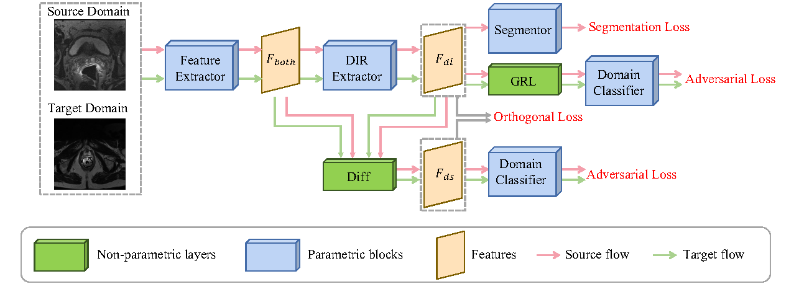
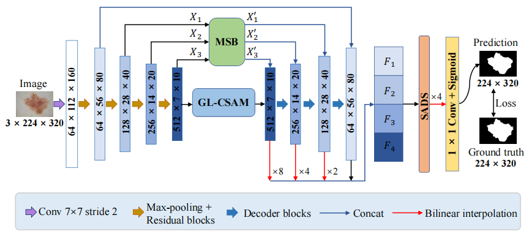

|
Yongheng Sun (孙永恒) |
Biography
I am currently pursuing the Ph.D. degree with the School of Mathematics and Statistics, Xi’an Jiaotong University, China, under the supervision of Prof. Chunfeng Lian. I received the B.Sc. degree from Xi’an Jiaotong University, Xi’an, China, in 2019. My research interests include medical image analysis, pattern recognition, and machine learning.
Research Interest
Currently, I work in the field of medical image analysis. Specifically, I mainly investigate generalization of medical image segmentation. Recently, I focus on the following research topics:- Longitudinal-Consistent Representation Learning
- Domain Adaptation for Medical Image Segmentation
- Domain Generation for Medical Image Segmentation
- Meta-Learning
- Attention Mechanism
- Other Medical Image Analysis (including classification/segmentation/detection)
Education Experiences

|
09/2019---Now, Ph.D. Student Department of Information Science, School of Mathematics and Statistics, Xi’an Jiaotong University Supervisor: Prof. Chunfeng Lian |
|
|
09/2015---06/2019, Bachelor’s Degree Department of Applied Mathematics, School of Mathematics and Statistics, Xi’an Jiaotong University Bachelor Thesis Title：Hermite-Galerkin spectral method for solving Fisher equation and nonlinear coupled reaction-diffusion equations in unbounded regions |
Honors and Awards
- The Second Prize Scholarship of Xi’an Jiaotong University, Fall 2022.
- Excellent Postgraduate of Xi’an Jiaotong University, Fall 2020.
- The Top Grade Scholarship of Xi’an Jiaotong University, Fall 2020.
- The Third Prize of China Postgraduate Mathematic Contest in Modleing, Fall 2020.
- Siyuan Scholarship of Xi'an Jiaotong University, Fall 2016.
Selected Publications [Full List]
|  |
Rethinking adversarial domain adaptation: Orthogonal decomposition for unsupervised domain adaptation in medical image segmentation |
|  |
MSCA-Net: Multi-scale contextual attention network for skin lesion segmentation |